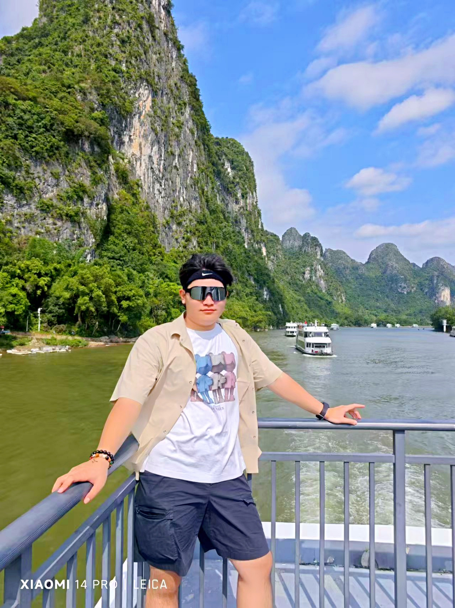
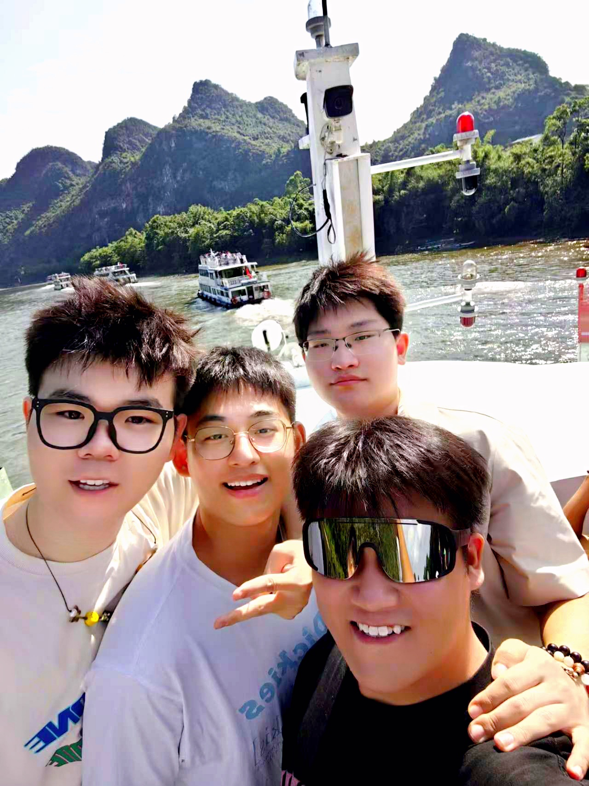
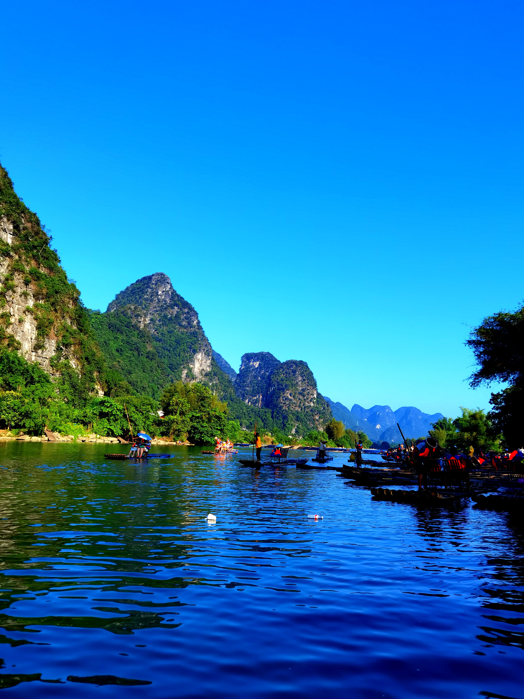

夏日的风裹挟着期待，我们踏上了桂林到阳朔的游轮，正式开启这场难忘的阳朔之旅。
游轮嬉闹：漓江山水初遇


游轮缓缓驶离码头，漓江的画卷在眼前徐徐展开。两岸山峦如墨，轮廓在蓝天的映衬下格外清晰，像是大自然用粗犷笔触勾勒的山水长卷。
江水碧绿，微风拂过，泛起层层涟漪，阳光洒在水面，碎成点点金芒。我站在甲板上，身旁是好友们的欢声笑语，远处游船穿梭，和这山水融为一体，"桂林山水甲天下"的意境，此刻才算真切体会。
山水竹筏：遇龙河悠然时光


下了游轮，我们直奔遇龙河。坐上竹筏，艄公悠然划桨，竹筏轻轻推开碧水，两岸翠竹依依，山峰形态各异，有的像沉思的老人，有的似戏水的巨象。
阳光透过树叶的缝隙，在水面和身上洒下斑驳光影，耳边除了水流声，就是我们不时发出的惊叹，这静谧又绝美的山水，把旅途的惬意拉到满格。
十里画廊：骑行中的青春活力

骑行十里画廊时，青春的活力彻底释放。租来的小电驴载着我们穿梭在山水间，路边的田园风光如画，金黄的稻田随风起伏，农舍错落有致。
看到心仪的景色，随时停下拍照，和喀斯特峰林同框，把自己也嵌进这阳朔的美里。遇龙桥古朴的身影横跨江面，我们在桥上奔跑、合影，笑声惊起桥头栖息的小鸟，这是属于我们的肆意时光。
品味美食：西街的烟火人间
傍晚，西街烟火升腾。石板路透着岁月的温度，店铺琳琅满目，特色小吃的香气弥漫在空气中。我们挤在人群里，尝一口阳朔啤酒鱼，鲜嫩的鱼肉裹着浓郁酒香；咬下外脆里糯的桂花糕，甜蜜在舌尖散开。
街头艺人的歌声、游客的交谈声交织，热闹却不喧嚣，这烟火人间，让旅途多了份温暖的烟火气。
返程路上，回忆着游轮上的山水初遇、竹筏里的悠然时光、骑行时的自由风、西街的烟火暖，明白阳朔的美，是山水与青春的交融。
那些和好友们在山水间大笑、奔跑、沉醉的瞬间，成了这个夏天最珍贵的记忆，而阳朔，也成了我们青春旅途里一抹难忘的山水底色。